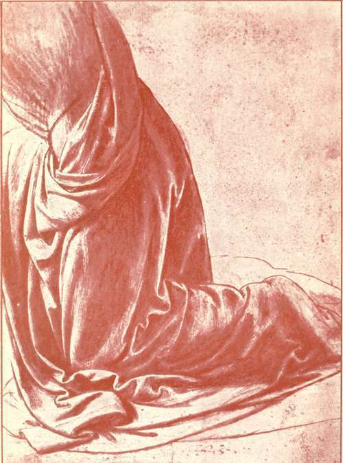

The Records, 1494-1519. Part 9
Description
This section is from the book "Leonardo Da Vinci", by Edward McCurdy. Also available from Amazon: Leonardo Da Vinci.
The Records, 1494-1519. Part 9
The old indifference to the trend of political events, which had prompted Leonardo's note on Ludovic's fallen fortunes, is seen in his sketches of wreathing smoke and flame-studies of spirals akin to those of the breaking wave at Piombino-with notes that "on the 16th and 18th of December, 1511, at three in the afternoon, occurred the conflagration made by the Swiss at Milan."1 But the change of rulers brought change of circumstances.
He had perhaps formerly acted as tutor to the young prince. He has left among his manuscripts (Institut F) part of a Latin grammar and glossary which he may have written for the use of his pupil. Doubtless Maximilian resented his having entered the service of the French. There are no records of his further employment.
The election of Giovanni de' Medici, son of Leonardo's old patron, Lorenzo il Magnifico, as Pope Leo X. in March, 1513, was followed by the gradual migration of artists from all parts of Italy to seek the service of the Vatican-and among them was Leonardo.
1 Windsor MSS., " Notes et Croquis sur l'Atmosphere," 1 r.
In the MSS. of the Institut E. (fol. i r.) is the note: " I set out from Milan for Rome on the 24th day of September, 1513, with Giovanni Francesco de' Melzi Salai Lorenzo and II Fanfoia."
Fie was in Florence on October 10th, and there probably met and travelled on with Giuliano de' Medici, il Magnifico, the Pope's brother, who was his patron during his stay in Rome. Through his influence he was given rooms in the Belvedere, being there in December as is shown by a memorandum of work done by the architect of the fabric Giuliano Leni.1 Although thus lodged within the precincts of the Vatican his talents were not employed there.
Vasari only says that the Pope gave him a commission and was indignant because he began by making the varnish, and at this point the narrative breaks off and apparently the commission with it. He mentions two small pictures which cannot be traced, a Madonna and Child and the Portrait of a Boy, as painted for the Pope's Datary Baldassare Turini; but in treating of Leonardo's life at Rome Vasari is mainly concerned with his wonderful inventions of superior mechanical toys, which he describes apologetically but with enthusiasm.
Tradition ascribes to Leonardo the fresco of the Virgin and Child with Donor in the Convent of S. Onofrio at Rome, which is now, however, accepted as the work of Giovanni Antonio Boltraffio, who is presumably identical with the Giovanni cited by Leonardo in the list of pupils who accompanied him to Rome. The fresco was probably painted during this period. A drawing in M. Bonnat's collection, probably by Leonardo, served as study for the 1 Miintz, "Historiens et Critiques de Raphael," p. 133.
Plate 20. Study Of Drapery For Kneeling Figure
Afaw Gallery Portfolio - Royal Library, Windsor
Infant Christ. Of Boltraffio's other works the most closely related to it is the Madonna and Child in the Poldi Pezzoli (No. 660)
The Cardinal of Aragon on visiting the painter at Amboise in 1517 was shown a portrait of a certain Florentine lady, painted from life at the request of Giuliano de' Medici. This must have reference to a picture painted in Rome (for there only the connection existed between Leonardo and his patron), and painted presumably before January, 1515, when, as Leonardo , records,1 Giuliano set out "to go and marry a wife in Savoy."
A Raphael drawing at Windsor, a sketch of the Leda of Leonardo, was probably made when the two painters were present together in Rome, and we may infer that Leonardo was then making studies towards it, and perhaps then, if at all, he executed the picture.
A tiny sketch of the composition occurs on a sheet of his notes and mathematical drawings.2 Another rather indistinct sketch, about two inches in height, is at Windsor.3
There are also at Windsor studies for the head, seen back and front, with elaborate braiding of the hair.4
Pictures in the Borghese Gallery, in the collection of the Baronne de Ruble at Paris, at Hanover and elsewhere are free copies of the same original composition, with which the Raphael drawing and the sketches at Milan and Windsor are evidently connected.
Two undoubtedly authentic sketches for a picture of Leda kneeling are also found at Windsor,1 and with these a drawing at Chatsworth is somewhat closely connected. To the larger of the two sketches at Windsor a picture at Neuwied of Leda kneeling has, I understand, a very considerable similarity.
1 R., 1377
2 C. A., 156 r. b., M.-W., Bei. II.
3 "Croquis et dessins de Nerfs et Vaisseaux," fol. 9r.
4 "Etudes sur la chevelure," 6r. and 7 r.
The " Anonimo Fiorentino" mentions a Leda by Leonardo, but without further remark.
Lomazzo describes it very exactly both in verse and prose as in the composition with the standing figure.2 In the " Idea del Tempio" he classes it with the MonaLisa as among his few completed works, and says that both were then, i.e., in 1591, at Fontainebleau. Cassiano del Pozzo described the picture at Fontainebleau in 1625: Leda standing, at her feet four infants emerged from two shells;-the picture in bad condition.
Pere Dan did not include it in 1642 in his list, which, however,he calls " autres ouvrages de Leonard da Vincy," but he describes the palace room by room, and in another room near the Salle des Bains mentions a Leda accompanied by Jupiter disguised as a swan.
A Leda by Leonardo figures in M. Herbot's inventory made in 1694, and then records of the picture at Fontainebleau cease.
A life-sized cartoon of " a Leda standing naked with Cupids in one of the corners at the bottom," was described by Edward Wright in 1721, in "Some Observations made in travelling through France and Italy," as one of a collection of cartoons by Leonardo da Vinci belonging to the Marquis Casnedi. There is, however, no other record of its history. That Leonardo carried his composition as far as the stage of the cartoon the existence of the various copies renders essentially probable. Lomazzo's evidence affords some ground for believing that he executed the picture.
1 "Notes et Croquis sur l'Anatomie du Cheval," II. fol. 44 r. 2 "Trattato," p. 274, and " Grotteschi," Book IV., p. 246.
Continue to:
Tags
leonardo da vinci, pictures, drawings, galleries, statues, da vinci